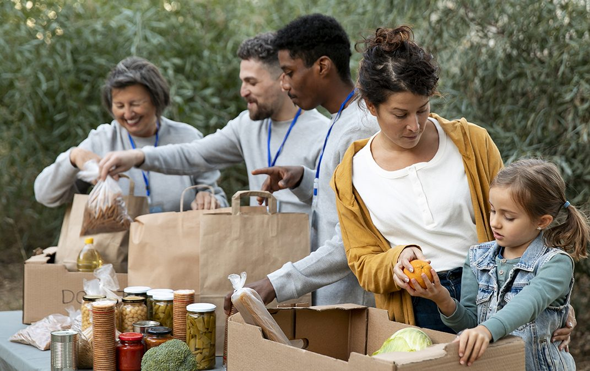
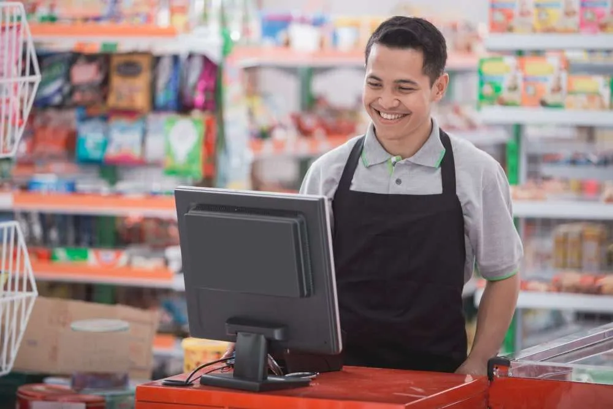

What makes it different
The value is not only in redistributing food. It is in making the system easier for businesses and more realistic for people who cannot rely on apps.
REFEED+ is a POS-integrated surplus-food donation system designed for Irish food businesses to reduce waste disposal costs and turn surplus food into a local, dignified resource for underprivileged individuals.
Become our partner
Mission

Ireland generates approximately 835,000 tonnes of food waste annually, with the retail and food service sectors contributing 30%. We turn daily operational waste into community impact by making donation as simple as discarding.

Many people experiencing housing insecurity lack smartphones and reliable internet access, excluding them from existing food-share apps. Our in-store kiosks provide a low-barrier, anonymous pathway to healthy food without requiring a mobile device.
National bodies and NGOs often rely on static, outdated reports to address food poverty. We provide real-time, neighborhood-level data on food waste and community needs, offering an empirical foundation for subsequent food waste solutions.
The value is not only in redistributing food. It is in making the system easier for businesses and more realistic for people who cannot rely on apps.
Stores face waste costs and sustainability pressure. ReFeed+ gives them a way to respond with a model that also creates visible local impact.
Process